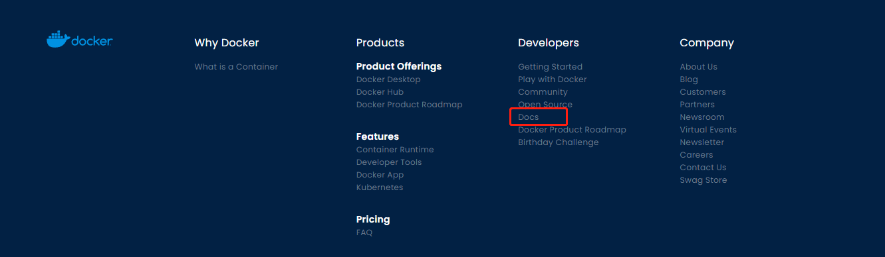
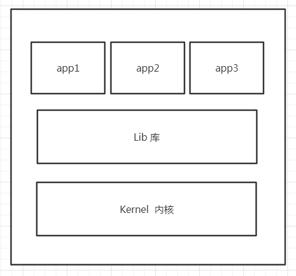
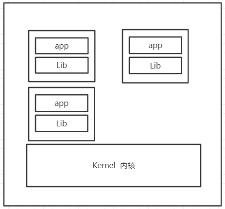

Docker学习
入门
Docker概述
Docker安装
Docker命令
- 镜像
- 容器
- 操作
- ……
==Docker镜像==
==容器数据卷==
构建镜像
- DockerFile
基于网络
- Docker网络原理
- IDEA整合Docker
集群
- Docker Compose
- Docker Swarm
持续编程持续部署
- CI/CD Jenkins
Docker概述
Docker为什么出现
- 一款产品：开发 – 上线，应用环境，应用配置
- 开发 – 运维。问题：我在我的电脑上可以运行！版本更新，导致服务不可用！对于运维来说，考验就十分大
- 环境配置十分麻烦，每台机器都要部署环境(集群Redis、ES、Hadoop……)，费时费力
发布项目时，将项目带着环境一起发布(jar + (Redis + Mysql + jdk + ES))，项目带上环境安装打包！
java —- apk —- 发布（应用商店） —- 客户使用apk —- 安装即可使用
java开发 —- jar + 环境 —- 打包项目带上环境 —- Docker仓库（类似于商店）—- 客户可直接下载发布的镜像 —- 直接运行即可
Docker的思想来自于集装箱
多个应用使用的都是同一套环境可能存在端口冲突等问题
==隔离==：Docker核心思想，打包装箱，每个箱子都是互相隔离的，即每个应用使用各自的环境
Docker资源

Docker hub(类似于github的仓库)：https://hub.docker.com/
Docker作用
在容器技术出现前，都是使用的虚拟机技术，虚拟机和Docker的容器技术都是==虚拟化技术==
虚拟机技术：在windows中装一个VMware，通过这个软件虚拟出来一台或多台电脑(特点：笨重，与真实的电脑是一样的)
容器技术：隔离，镜像，十分小巧，仅需运行镜像即可
虚拟机技术

在windows中装一个VMware，通过这个软件虚拟出来一台或多台电脑(特点：笨重，与真实的电脑是一样的)
虚拟机技术缺点：
- 资源占用十分多
- 冗余步骤多
- 启动慢
容器化技术
==容器化技术不是模拟一个完整的操作系统==

与虚拟机技术比较：
- 传统虚拟机，虚拟出一套硬件，运行一个完整的操作系统，然后在这个系统上安装和运行软件
- 容器内的应用直接运行在宿主机的内核中，容器是没有自己的内核的，也没有虚拟硬件，所以就轻便了
- 每个容器之间互相隔离，每个容器内都有一个属于自己的文件系统，互不影响。
DevOps（开发、运维）
应用更快速的交付和部署
传统：一堆帮助文档，安装程序
Docker：打包镜像发布测试，一键运行
更便捷的升级和扩缩容
项目打包成一个镜像后，若需要从服务器A 扩展到 服务器B，仅需要在服务器B上运行镜像文件即可
更简单的系统运维
在容器化之后，开发与测试环境都是高度一致的
更高效的计算资源利用
Docker是内核级别的虚拟化，可以在一个物理机上运行很多的容器实例，服务器性能可以被压榨极致。